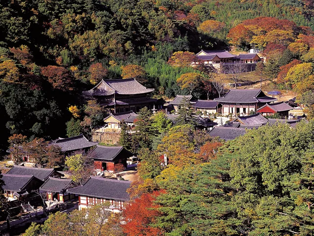
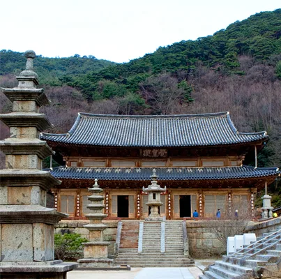
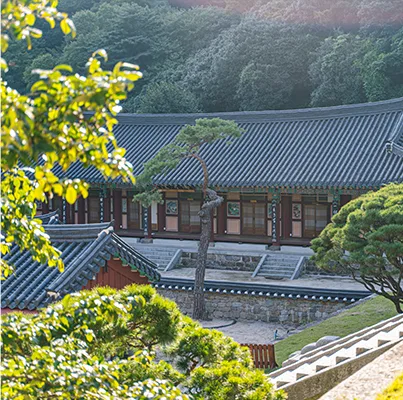
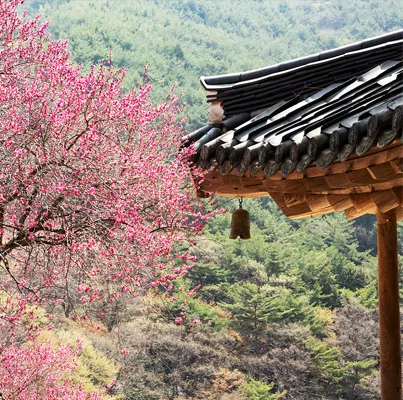
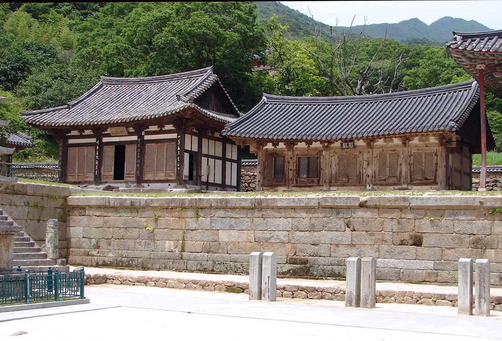
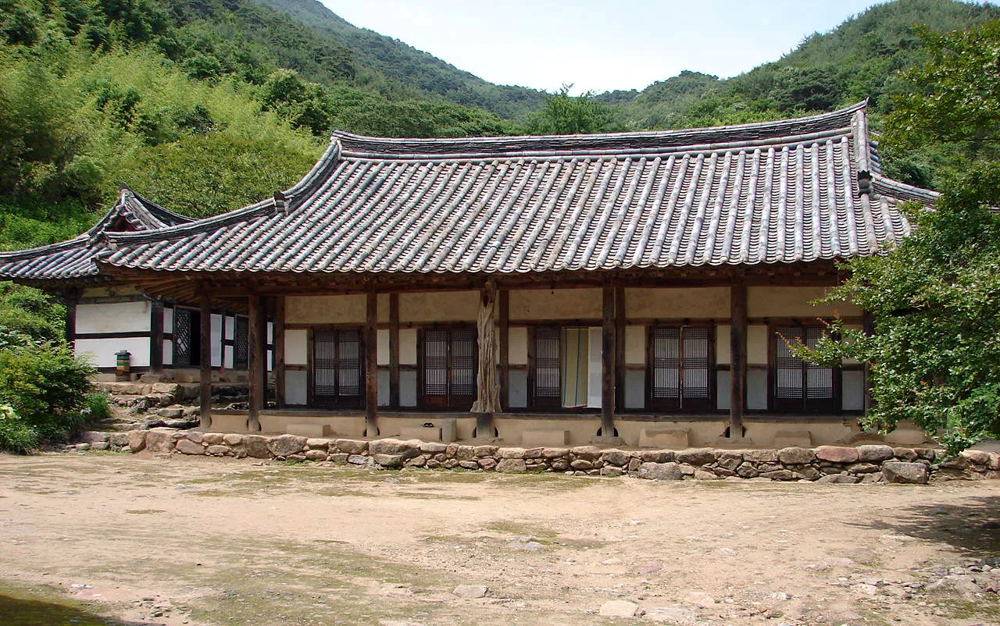

▲ 단풍철 화엄사 경내를 하늘에서 내려다본 모습. 검은 기와지붕과 붉게 물든 산자락이 대비를 이룬다 ⓒ 구례군

▲ 화엄사 경내 중심부. 국보 각황전과 그 앞의 석탑이 나란히 자리해 있다 ⓒ 구례군
전라남도 구례군 마산면, 지리산 노고단 자락에 자리한 화엄사는 서기 544년 연기조사가 창건한 것으로 전해지는 천년 고찰이다. 대한불교조계종 제19교구 본사로, 국보 4점과 보물을 비롯한 문화재를 두루 보유하고 있다. 봄이면 '화엄매'라 불리는 홍매화로 전국에서 인파가 몰리는 곳이지만, 가을에는 또 다른 얼굴을 보여준다. 지리산을 타고 내려오는 단풍이 검은 기와지붕과 오래된 돌담을 붉고 노랗게 물들이면서, 경내 전체가 하나의 풍경화처럼 바뀌는 것이다.
1. 국보로 둘러싸인 경내 — 각황전과 사사자삼층석탑
▲ 국보 제67호 각황전. 정면 7칸, 측면 5칸 규모로 국내 최대급 중층 불전에 속한다 ⓒ 구례군
화엄사 경내에서 가장 먼저 눈에 들어오는 건물은 각황전(국보 제67호)이다. 원래 3층 목탑이었던 장륙전이 임진왜란 때 불타 없어진 자리에, 조선 숙종 때 중건되며 지금의 2층 규모 불전으로 다시 세워졌다. 정면 7칸에 이르는 웅장한 규모는 국내에 남은 중층 불전 가운데서도 손꼽힌다. 각황전 뒤편 언덕에는 사사자삼층석탑(국보 제35호)이 자리한다. 네 마리의 돌사자가 탑신을 떠받치는 독특한 구조로, 통일신라 시대 석조미술의 정수로 평가받는다. 이 외에도 괘불을 걸 때 쓰는 대형 불화인 영산회괘불탱(국보 제301호)과 각황전 앞의 석등(국보 제12호)까지, 화엄사는 좁은 경내에 국보 4점을 품고 있다. 대웅전(보물 제299호) 역시 각황전과 함께 경내의 중심을 이룬다.
2. 단풍은 언제, 어디가 절정일까

▲ 화엄사 전각과 노송이 어우러진 경내 풍경. 가을이면 뒤편 산자락부터 단풍이 내려온다 ⓒ 구례군
지리산 단풍은 해발이 높은 능선부터 물들기 시작해 산 아래로 서서히 내려온다. 통상 10월 중순 바래봉·피아골·천왕봉 중턱에서 단풍이 시작되고, 10월 하순부터 11월 초순 사이 절정에 이른다. 화엄사는 지리산 자락에서도 낮은 위치에 자리해 있어 산 정상부보다 일주일가량 늦게 절정을 맞는 편이다. 경내를 둘러싼 계곡과 진입로의 단풍나무·느티나무가 함께 물들면서, 검은 기와지붕과 붉은 단풍의 색 대비가 이 시기 화엄사 사진의 단골 소재가 된다. 주말, 특히 절정기 주말에는 진입도로와 주차장이 붐빌 수 있어 이른 오전 방문이 유리하다.
| 구간 | 단풍 시작 | 절정 예상 |
|---|---|---|
| 지리산 능선부(천왕봉·바래봉·피아골 상단) | 10월 중순 | 10월 하순 |
| 화엄사 경내·계곡 일원 | 10월 하순 | 10월 말~11월 초 |
※ 그해 기온과 강수량에 따라 절정 시기가 1주가량 앞뒤로 달라질 수 있다. 방문 직전 구례군 문화관광 홈페이지의 실시간 안내를 확인하는 편이 정확하다. 바로가기
3. 화엄매 대신 만나는 가을 화엄사의 다른 얼굴

▲ 천연기념물 제485호 화엄매(홍매화). 3월 말~4월 초에 피는 꽃이라 가을 단풍철에는 볼 수 없다 ⓒ 구례군
화엄사를 검색하면 가장 먼저 따라붙는 이미지는 각황전과 대웅전 사이에 선 300년 넘은 홍매화, 이른바 '화엄매(천연기념물 제485호)'다. 다만 이 나무는 3월 말에서 4월 초 사이에만 꽃을 피우기 때문에, 가을 단풍철 방문객은 이 명물을 보지 못한다. 대신 가을의 화엄사는 매화 대신 단풍이, 화사한 분홍 대신 진한 다홍과 노랑이 경내를 채운다. 봄의 화엄사가 '한 그루의 꽃'에 시선이 쏠린다면, 가을의 화엄사는 산 전체가 배경이 되어 훨씬 넓은 풍경을 보여준다는 점이 다르다.
4. 구층암과 요사채 — 덜 붐비는 산책 코스

▲ 화엄사 요사채 일원. 각황전·대웅전 중심 동선에서 살짝 벗어나면 한적한 산책이 가능하다 Wikimedia Commons
각황전과 대웅전이 몰려 있는 중심 영역을 둘러봤다면, 경내 동쪽의 구층암까지 걸어볼 만하다. 모과나무 등걸을 다듬지 않고 그대로 세운 기둥으로 유명한 암자로, 단체 관광객 동선에서 살짝 비켜나 있어 상대적으로 한적하다. 구층암으로 가는 길과 그 주변 요사채 일대 역시 단풍나무가 적지 않아, 각황전 앞 넓은 마당의 단체 사진과는 다른 차분한 가을 풍경을 담을 수 있다.
화엄사만 보고 돌아가기 아쉽다면 인근 코스와 묶는 편이 좋다. 단풍이 특히 짙은 피아골은 화엄사에서 차로 20분 남짓이며, 굽이굽이 이어지는 지리산둘레길 코스와도 맞닿아 있다. 화엄사 IC 방향으로는 지리산온천랜드가 있어 단풍 트레킹 후 온천으로 마무리하는 코스도 인기다. 다만 봄철의 상징인 구례 산수유마을(산동면)은 3월 산수유꽃 축제 시즌에 맞춰 별도로 찾는 편이 낫다 — 가을에는 노란 산수유 열매가 열리지만 봄철 만개한 꽃경치와는 분위기가 다르다.

▲ 화엄사 경내의 전각과 돌계단. 경내 전체가 20여 동의 부속 건물로 이뤄져 있다 Wikimedia Commons
5. 접근 정보 — 주소·교통·주차·요금
화엄사는 입장료와 주차 요금이 모두 무료다. 입장료는 2023년 5월부터, 주차장은 2026년 1월부터 전면 무료로 전환됐다. 서울에서는 남부터미널에서 고속버스를 타면 구례터미널까지 약 3시간 10분이 걸리며, 이후 구례터미널에서 화엄사행 시내버스나 택시로 이동하면 된다. 자가용을 이용한다면 화엄사 IC에서 가까워 접근성이 좋은 편이다.
| 주소 | 전남 구례군 마산면 화엄사로 539 |
|---|---|
| 문의 | 061-783-7600 |
| 입장료 | 무료(2023년 5월~) |
| 주차료 | 무료(2026년 1월~) |
| 관람시간 | 연중 개방(일몰 후 입장 제한, 법회·행사 시 동선 변동 가능) |
| 대중교통 | 서울 남부터미널→구례터미널(고속버스 약 3시간 10분)→화엄사행 시내버스·택시 |
✅ 화엄사 단풍 여행, 이것만은 확인하세요
· 입장료·주차료 모두 무료(2026년 기준)
· 단풍 절정은 통상 10월 말~11월 초, 지리산 능선보다 일주일가량 늦음
· 봄의 상징 홍매화(화엄매)는 가을철엔 개화하지 않음
· 각황전·사사자삼층석탑 등 국보 4점은 경내 도보 이동으로 모두 관람 가능
· 절정기 주말엔 진입로·주차장 혼잡 — 이른 오전 방문 권장
6. 정리
화엄사는 봄엔 홍매화로, 가을엔 지리산 단풍으로 두 번 절정을 맞는 절이다. 국보급 문화재가 밀집한 경내와 그 뒤로 펼쳐지는 지리산 자락의 단풍이 어우러지는 10월 말에서 11월 초 사이가 방문의 적기다. 입장료·주차료가 모두 무료로 바뀐 만큼 부담 없이 찾을 수 있지만, 절정기 주말만큼은 혼잡을 감안해 이른 시간에 움직이는 편이 좋다.